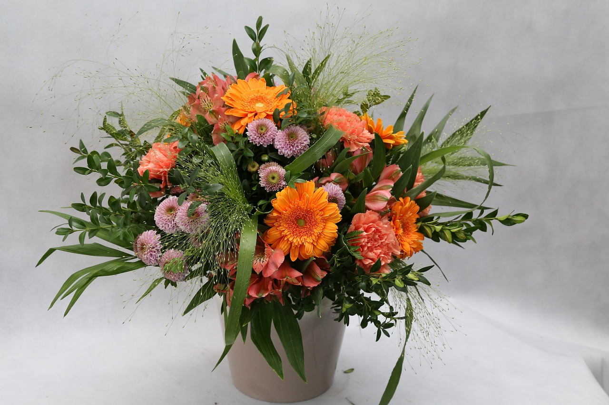

BloomPetals est une entreprise passionnée et créative spécialisée dans la conception de magnifiques bouquets floraux pour embellir vos événements spéciaux. Que ce soit un mariage, un anniversaire, une réception ou toute autre occasion festive.
Création de bouquets personnalisés: BloomPetals offre un service de création de bouquets floraux entièrement personnalisés pour toutes les occasions. Que ce soit pour un mariage élégant, un anniversaire chaleureux ou un événement d'entreprise sophistiqué, notre équipe d'artisans floraux talentueux travaille en étroite collaboration avec les clients. pour concevoir des arrangements sur mesure, adaptés à leurs goûts et à l'ambiance de l'événement.
Décoration Florale d'Événements : Notre équipe de professionnels se spécialise dans la décoration florale d'événements. Nous transformons les lieux de fêtes en espaces enchanteurs en utilisant des fleurs fraîches et luxuriantes. Des centres de table élégants aux arches florales majestueuses, nous concevons des décors floraux qui éblouissent et captivent les invités. Notre service comprend également la livraison, l'installation et la décoration sur place pour garantir une expérience sans stress pour nos clients.
Ateliers de Composition Florale : En plus de nos services de décoration et de création de bouquets, BloomPetals propose des ateliers de composition florale interactifs. Ces ateliers sont parfaits pour les amateurs de fleurs et les passionnés de design floral. Nos experts partagent leurs connaissances et leurs compétences, guidant les participants dans la création de leurs propres arrangements floraux. C'est une expérience enrichissante et ludique, idéale pour les événements d'entreprise, les enterrements de vie de jeune fille ou les fêtes privées. Les participants repartent avec leurs créations florales uniques et des souvenirs mémorables de l'atelier.